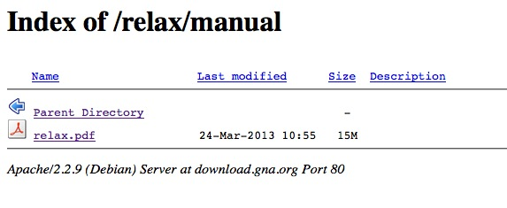

|
On 23/7/13 9:28 , Edward d'Auvergne
wrote:
Are you sure that the link is correct? Dominique  |
begin:vcard fn:Dominique Marion n:Marion;Dominique org:Institut de Biologie Structurale;Biomolecular NMR group adr:;;41 Rue Jules Horowitz;Grenoble;;38027;France email;internet:Dominique.Marion@xxxxxx tel;work:(33) 4 38 78 36 98 x-mozilla-html:TRUE version:2.1 end:vcard